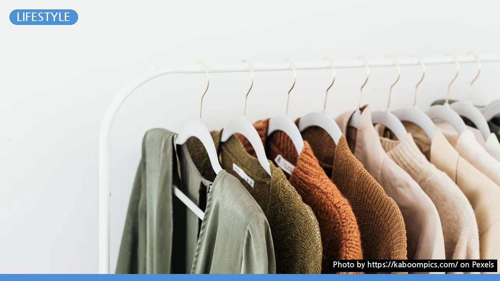
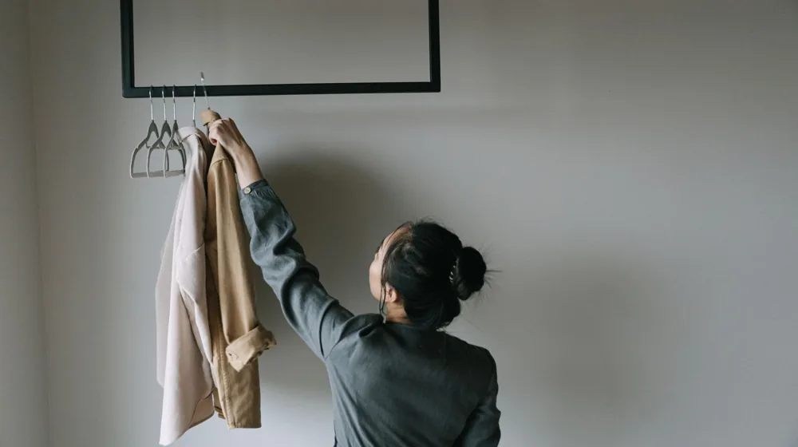

미니멀 옷장 시작은 이것부터! 5단계 체크리스트로 실패 없이
사진: https://kaboompics.com/ / Pexels (무료 이미지, 출처 표기)
미니멀 옷장이 필요한 이유: 시간과 공간을 되찾는 첫걸음

옷장 가득한 옷 앞에서 오늘도 입을 옷이 없다고 느끼시나요? 무심코 쌓아둔 옷들로 공간은 부족하고, 매일 아침 옷 고르는 데 시간이 너무 많이 소요되진 않으신가요? 미니멀 옷장은 단순히 옷의 개수를 줄이는 것을 넘어, 여러분의 시간과 공간, 그리고 의사결정 에너지를 절약해주는 효과적인 방법입니다.
불필요한 소비를 줄이고, 나에게 정말 필요한 옷들로만 옷장을 채움으로써 삶의 만족도를 높일 수 있습니다. 미니멀 옷장을 통해 얻게 될 여유로운 아침과 깔끔한 공간을 상상해보세요. 이제 여러분도 충분히 할 수 있습니다.
성공적인 미니멀 옷장 만들기 5단계 체크리스트
미니멀 옷장을 만드는 과정은 생각보다 어렵지 않습니다. 아래 5단계 체크리스트를 따라 차근차근 진행해보세요. 2026년 8월 31일 기준으로 누구든 쉽게 따라 할 수 있도록 실용적인 팁을 담았습니다. 정확한 사항은 여러분의 라이프스타일에 맞춰 유연하게 적용하시길 권장합니다.
-
1단계: 미니멀 옷장 목표 설정 및 현재 옷장 파악
왜 미니멀 옷장을 만들고 싶은지 구체적인 목표를 세워보세요. 옷을 고르는 시간 단축, 특정 공간 확보, 불필요한 소비 줄이기 등 개인적인 목표가 명확할수록 동기 부여에 도움이 됩니다. 이와 함께 현재 옷장 상태를 사진으로 찍어두거나 목록을 작성하며 파악합니다.
- 목표 설정: (예시) '평일 아침 옷 고르는 시간 10분 단축', '계절별 옷 20벌 이내로 유지'
- 현재 옷장 점검: 옷장 칸수, 서랍 개수, 보관 중인 의류 및 패션 잡화 종류와 개수를 대략적으로 파악합니다.
-
2단계: 모든 옷 꺼내기 및 분류
옷장 안의 모든 옷을 침대나 넓은 바닥에 꺼내 놓습니다. 이 과정은 내가 얼마나 많은 옷을 가지고 있는지 시각적으로 인지하게 돕습니다. 옷을 세 가지 범주로 나눕니다.
- "자주 입는 옷": 최근 1년간 3회 이상 착용한 옷, 망설임 없이 손이 가는 옷
- "고민되는 옷": 언젠가 입을 것 같은 옷, 추억이 담긴 옷, 사이즈가 안 맞는 옷
- "버릴 옷": 낡고 헤진 옷, 얼룩진 옷, 유행이 지나 더 이상 입지 않을 옷, 불편한 옷
-
3단계: 버릴 옷 기준 적용
두 번째 단계에서 분류한 "고민되는 옷"에 대해 명확한 기준을 적용하여 과감히 처분합니다. 다음 원칙들을 활용하면 판단이 쉬워집니다.
- 3년의 법칙: 최근 3년 동안 한 번도 입지 않은 옷은 앞으로도 입지 않을 확률이 높습니다.
- 1+1 법칙: 새로운 옷을 하나 구매하면, 옷장 안에 있는 비슷한 종류의 옷 하나를 비웁니다.
- "지금 당장" 법칙: 지금 당장 입고 싶은 마음이 들지 않는다면, 비울 것을 고려합니다.
- 감정 배제: "혹시나 언젠가는..." 같은 생각은 버리고, 현재의 필요성에 집중합니다.
-
4단계: 핵심 아이템 선정 및 채우기
이제 미니멀 옷장을 구성할 핵심 아이템을 선정할 차례입니다. 캡슐 옷장(Capsule Wardrobe) 개념을 활용하면 좋습니다. 캡슐 옷장은 최소한의 의류로 다양한 조합이 가능하도록 구성된 소수의 아이템을 의미합니다. 계절별로 겹치지 않는 30~40벌 내외의 옷을 목표로 할 수 있습니다.
자신의 라이프스타일과 잘 어울리는 기본 색상(네이비, 블랙, 화이트, 그레이 등)을 정하고, 그에 맞는 옷들을 선택합니다. 고품질의 베이직 아이템 위주로 구성하면 오래 착용할 수 있고, 다양한 옷과 매치하기 용이합니다.
-
5단계: 옷장 정리 및 관리 시스템 구축
미니멀 옷장을 지속적으로 유지하기 위한 시스템을 만듭니다. 옷을 보관할 때는 종류별, 색상별로 정리하여 한눈에 보이게 합니다. 옷걸이는 통일된 것으로 사용하여 깔끔함을 유지하고, 서랍 안에는 칸막이를 활용하여 흐트러짐을 방지합니다.
새 옷을 구매할 때는 1+1 법칙을 기억하고, 충동구매를 자제하는 습관을 들입니다. 계절이 바뀔 때마다 옷장 전체를 다시 한번 점검하고, 필요 없는 옷은 즉시 비우는 루틴을 만듭니다. 옷을 오래 입기 위해 적절한 세탁 및 보관 방법도 중요합니다.
"이것만은 버리지 마세요!" 미니멀 옷장 정리 시 흔한 실수
미니멀 옷장을 만들 때 무조건적으로 많은 옷을 버리는 것이 능사는 아닙니다. 후회할 수 있는 몇 가지 상황을 피하기 위해 다음 사항들을 고려해 보세요.
- 경조사 등 특별한 날을 위한 옷: 갑작스러운 행사 대비를 위해 한두 벌 정도는 남겨두는 것이 좋습니다.
- 운동복 또는 기능성 의류: 일상복과 달리 기능이 중요한 옷이므로, 필요한 만큼은 유지합니다.
- 오래되었지만 소중한 추억이 담긴 옷: 모든 추억의 옷을 비울 필요는 없습니다. 소중한 의미를 가진 몇 벌은 보관 상자를 활용해 따로 보관할 수 있습니다.
- 시즌 오프된 고품질 기본 아이템: 당장은 입지 않아도 다음 시즌에 활용도가 높은 기본 재킷이나 코트 등은 잘 보관해 두었다가 다시 꺼내 입을 수 있습니다.
미니멀 옷장 유지 관리 팁: 꾸준함이 핵심
미니멀 옷장은 한 번 만들면 끝이 아니라, 지속적인 관심과 관리가 필요합니다. 다음 팁들을 활용하여 여러분의 미니멀 옷장을 꾸준히 유지해보세요.
- 정기적인 옷장 점검: 분기별 또는 계절별로 옷장 전체를 다시 한번 살펴보고, 불필요한 옷은 바로 비워냅니다.
- 새 옷 구매 전 숙고: "이 옷이 내 기존 옷들과 잘 어울릴까?", "이 옷이 정말 나에게 필요한가?" 질문을 던지며 충동구매를 방지합니다.
- 옷 상태 관리: 옷을 깨끗하게 관리하고 보수하여 수명을 늘립니다. 작은 수선으로도 새 옷처럼 입을 수 있습니다.
- 공간의 한계 설정: 옷을 보관할 수 있는 공간을 미리 정해두고, 그 공간을 넘지 않도록 합니다.
미니멀 옷장, 궁금증 해소 Q&A
미니멀 옷장에 대해 자주 묻는 질문들을 모아봤습니다. 여러분의 궁금증을 해결하는 데 도움이 되길 바랍니다.
Q1: 계절별 옷은 어떻게 관리하나요?
A1: 자주 입는 옷은 옷장이나 서랍에 보관하고, 시즌이 지난 옷은 압축 팩이나 리빙 박스에 넣어 침대 밑, 옷장 상단 등 별도 공간에 보관합니다. 계절이 바뀔 때마다 꺼내 입을 옷만 남기고 나머지는 다시 정리하는 과정을 거치세요.
Q2: 특별한 날 입을 옷은 어떻게 해야 하나요?
A2: 경조사용 정장이나 드레스처럼 활용 빈도가 낮은 옷은 가장 안쪽이나 별도의 수납공간에 보관하되, 최대 2~3벌 이내로 제한하는 것이 좋습니다. 대여 서비스를 이용하는 것도 좋은 대안이 될 수 있습니다.
Q3: 옷을 버리기 아까운데 어떻게 처리해야 하나요?
A3: 입지 않는 옷은 의류 수거함에 버리거나, 상태가 좋은 경우 중고 거래 앱을 통해 판매할 수 있습니다. 지인에게 나눔하거나 기부하는 것도 좋은 방법입니다. 옷의 수명을 연장하는 업사이클링 아이디어를 찾아보는 것도 좋습니다.
🔗 이 글도 함께 보면 좋아요: 집중력 높이는 환경 만들기, 이것부터 바꾸세요: 효율 2배 올리는 체크리스트
관련 추천 상품
미니멀 옷장 행거, 옷 수납 정리함, 논슬립 옷걸이 관련 인기 상품 보러가기
이 포스팅은 쿠팡 파트너스 활동의 일환으로, 이에 따른 일정액의 수수료를 제공받습니다.